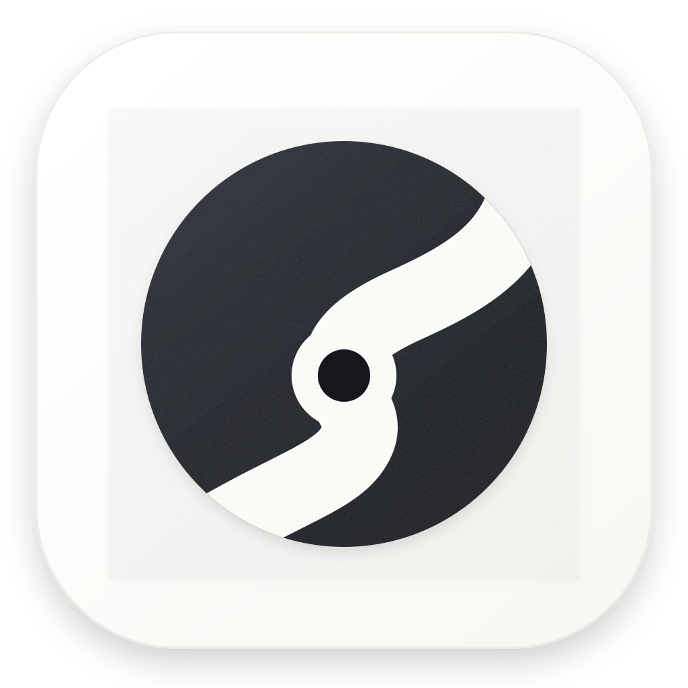

ScoutThe gapBuilders, the gap is your market.
$581.7Bwent into AI.
6%got serious results from AI.Most companies aren't there yet.
That gap is
your market.
Independent market signals: Stanford HAI, AI Index 2026 · McKinsey, State of AI 2025
ScoutThe leak
The enterprise engagement path
The first call is where
value starts leaking.
Customer call
Notes
Deck
Ticket
Build
“That’s not what I wanted.”
ScoutThe answer
The builder's edgeScout.
Scout finds what matters.Codex turns it into working software.
Codex is the power behind Scout
ScoutThe build
Built for builders
Scout finds it.
Codex builds it.
Right problem
Human approval
Codex builds
ScoutThe challenge
Builders: stop pitching pilots.Start shipping value.
Scout finds the signal. Codex powers the build.